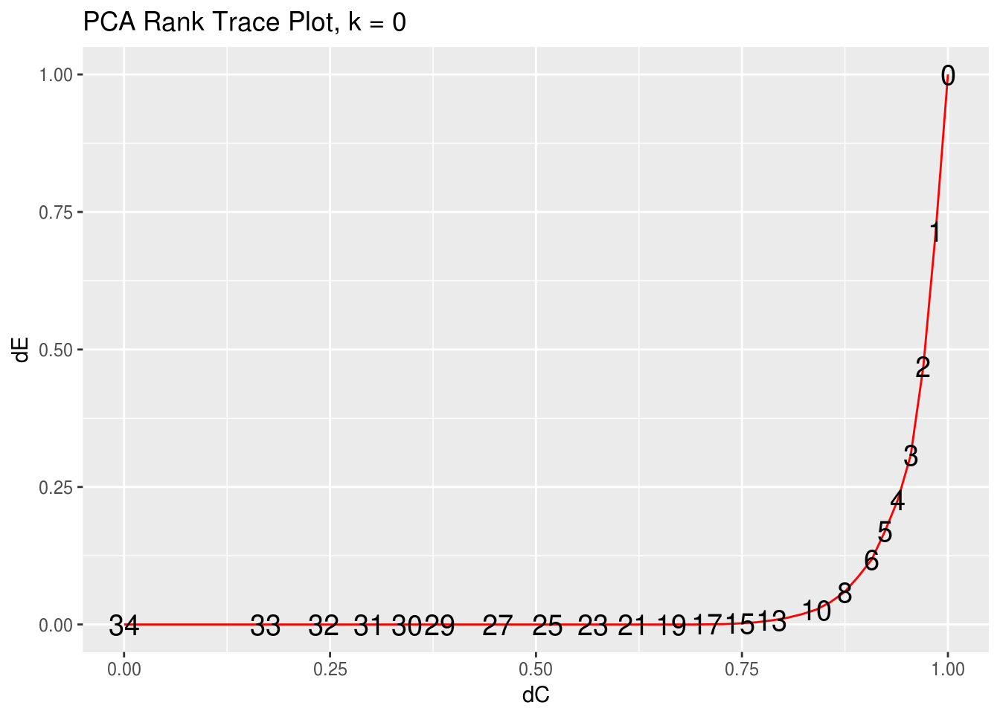
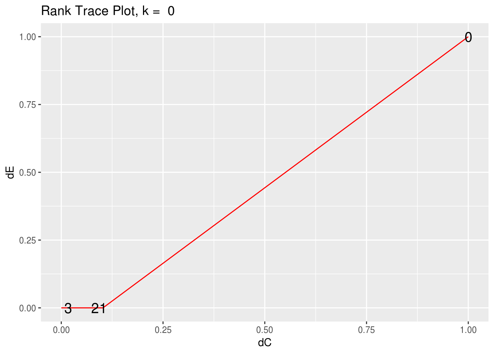
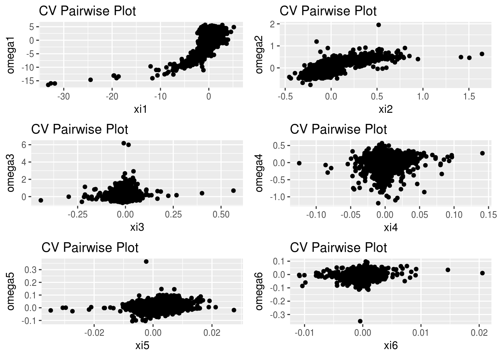

rrr for Multivariate Analysis
Chris Addy
2016-11-22
library(rrr)Reduced-Rank Regression
Classical Multivariate Regression
Let \(\mathbf{X} = \left(X_1, X_2, \dots, X_r\right)^\tau\) and \(\mathbf{Y} = \left(Y_1, Y_2, \dots, Y_s\right)^\tau\), i.e., \(\mathbf{X}\) is a random vector. The classical multivariate regression model is given by
\[ \overset{s \times 1}{\mathbf{Y}} = \overset{s \times 1}{\boldsymbol{\mu}} + \overset{s \times r}{\mathbf{C}} \; \overset{r \times 1}{\mathbf{X}} + \overset{s \times 1}{\varepsilon} \]
with
\[ \mathrm{E}\left(\varepsilon\right) = \mathbf{0}, \quad \mathrm{cov}\left(\varepsilon\right) = \mathbf{\Sigma}_{\varepsilon \varepsilon} \]
and \(\varepsilon\) is distributed independently of \(\mathbf{X}.\)
The least-squares estimator is given by
\[ \hat{\mathbf{C}} = \hat{\mathbf{\Sigma}}_{YX} \hat{\mathbf{\Sigma}}_{XX}^{-1} \]
Note that \(\hat{\mathbf{C}}\) contains no term that takes into the account the correlation of the \(Y_i\)s. This is a surprising result, since we would expect correlation, perhaps very heavy correlation, among the responses.
In other words, to find the least-squares estimate \(\hat{\mathbf{C}}\) of \(\mathbf{C}\), one need only regress \(\mathbf{X}\) separately on each \(Y_i\) and concatenate those multiple-regression coefficient vectors into a matrix to construct the estimated coefficient matrix \(\hat{\mathbf{C}}\).
The classical multivariate regression model is not truly multivariate.
Multivariate Regression: The Tobacco Data Set
One way to introduce a multivariate component into the model is to allow for the possibility that \(\mathbf{C}\) is deficient, or of reduced-rank \(t\).
\[ \mathrm{rank}\left(\mathbf{C}\right) = t \leq \mathrm{min}\left(r, s\right) \]
In other words, we allow for the possibility that there are unknown linear constraints on \(\mathbf{C}\).
Without loss of generality, we consider the case when \(r > s\), i.e., \(t < s\).
When \(t = s\), the regression model is full-rank, and can be fit using multiple regression on each \(Y_i \in \mathbf{Y}.\) When \(t < s\), \(\mathbf{C}\) can be decomposed into non-unique matrices \(\mathbf{A}_{s \times t}\) and \(\mathbf{B}_{t \times r}\), such that \(\mathbf{C} = \mathbf{AB},\) and the multivariate regression model is given by
\[ \overset{s \times 1}{\mathbf{Y}} = \overset{s \times 1}{\boldsymbol{\mu}} + \overset{s \times t}{\mathbf{A}} \; \overset{t \times r}{\mathbf{B}} \; \overset{r \times 1}{\mathbf{X}} + \overset{s \times 1}{\varepsilon} \]
Estimating \(\boldsymbol{\mu}, \mathbf{A}, \mathbf{B}\), and ultimately the reduced-rank regression coefficient \(\mathbf{C}^{\left(t\right)}\), is done by minimizing the weighted sum-of-squares criterion
\[ \mathrm{E}\left[\left(\mathbf{Y} - \boldsymbol{\mu} - \mathbf{ABX}\right)^\tau \mathbf{\Gamma}\left(\mathbf{Y} - \boldsymbol{\mu} - \mathbf{ABX}\right)\right] \]
where \(\boldsymbol{\Gamma}\) is a positive-definite symmetric \(\left(s \times s\right)\)-matrix of weights, the expectation of which is taken over the joint distribution \(\left(\mathbf{X}^\tau, \mathbf{Y}^\tau\right)^\tau\). This weighted sum-of-squares criterion is minimized when
\[ \begin{aligned} \boldsymbol{\mu}^{\left(t\right)} & = \boldsymbol{\mu}_Y - \mathbf{A}^{\left(t\right)}\mathbf{B}^{\left(t\right)}\boldsymbol{\mu}_X \\ \mathbf{A}^{\left(t\right)} & = \mathbf{\Gamma}^{-1/2}\mathbf{V}_t \\ \mathbf{B}^{\left(t\right)} & = \mathbf{V}_t^\tau \boldsymbol{\Gamma}^{-1/2}\mathbf{\Sigma}_{YX}\mathbf{\Sigma}_{XX}^{-1} \\ \end{aligned} \]
where \(\mathbf{V}_t = \left(\mathbf{v}_1, \dots, \mathbf{v}_t\right)\) is an \(\left(s \times t\right)\)-matrix, with \(\mathbf{v}_j\) the eigenvector associated with the \(j\)th largest eigenvalue of
\[ \mathbf{\Gamma}^{1/2}\mathbf{\Sigma}_{YX} \mathbf{\Sigma}_{XX}^{-1} \mathbf{\Sigma}_{XY} \mathbf{\Gamma}^{1/2} \]
In practice, we try out different values of \(\mathbf{\Gamma}\). Two popular choices – and ones that lead to interesting results as we will see – are \(\mathbf{\Gamma} = \mathbf{I}_r\) and \(\mathbf{\Gamma} = \boldsymbol{\Sigma}_{YY}^{-1}\).
Since the reduced-rank regression coefficient relies on inverting \(\boldsymbol{\Sigma}_{XX}\) and, possibly, \(\boldsymbol{\Sigma}_{YY}\), we want to take into consideration the cases when \(\boldsymbol{\Sigma}_{XX}, \boldsymbol{\Sigma}_{YY}\) are singular or difficult to invert.
Borrowing from ridge regression, we perturb the diagonal of the covariance matrices by some small constant, \(k\). Thus, we carry out the reduced-rank regression procedure using
\[ \begin{aligned} \hat{\boldsymbol{\Sigma}}_{XX}^{\left(k\right)} & = \hat{\boldsymbol{\Sigma}}_{XX} + k \mathbf{I}_r \\ \hat{\boldsymbol{\Sigma}}_{YY}^{\left(k\right)} & = \hat{\boldsymbol{\Sigma}}_{YY} + k \mathbf{I}_r \end{aligned} \]
library(dplyr)
data(tobacco)
tobacco <- as_data_frame(tobacco)
tobacco_x <- tobacco %>%
select(starts_with("X"))
tobacco_y <- tobacco %>%
select(starts_with("Y"))
## multivariate regression
x <- as.matrix(tobacco_x)
y <- as.matrix(tobacco_y)
multivar_reg <- t(cov(y, x) %*% solve(cov(x)))
## separate multiple regression
lm1 <- lm(y[,1] ~ x)$coeff
lm2 <- lm(y[,2] ~ x)$coeff
lm3 <- lm(y[,3] ~ x)$coeff
### compare multivariate regression and separate multiple regresions
multivar_reg## Y1.BurnRate Y2.PercentSugar Y3.PercentNicotine
## X1.PercentNitrogen 0.06197282 -4.3186662 0.5521620
## X2.PercentChlorine -0.16012848 1.3262863 -0.2785609
## X3.PercentPotassium 0.29211810 1.5899470 0.2175877
## X4.PercentPhosphorus -0.65798016 13.9526510 -0.7231067
## X5.PercentCalcium 0.17302593 0.5525913 0.3230914
## X6.PercentMagnesium -0.42834825 -3.5021083 2.0048603cbind(lm1, lm2, lm3)## lm1 lm2 lm3
## (Intercept) 1.41113730 13.6329133 -1.5648236
## xX1.PercentNitrogen 0.06197282 -4.3186662 0.5521620
## xX2.PercentChlorine -0.16012848 1.3262863 -0.2785609
## xX3.PercentPotassium 0.29211810 1.5899470 0.2175877
## xX4.PercentPhosphorus -0.65798016 13.9526510 -0.7231067
## xX5.PercentCalcium 0.17302593 0.5525913 0.3230914
## xX6.PercentMagnesium -0.42834825 -3.5021083 2.0048603 Fit Reduced-Rank Regression with rrr()
args(rrr)## function (x, y, gamma_matrix, rank = "full", type = "cov", k = 0)
## NULLThe main function in the rrr package is – unsurprisingly – rrr()
rrr() takes as inputs the data frames, or matrices, of input and response variables, the weight matrix \(\mathbf{\Gamma}\), the rank (defaulted to full rank), the type of covariance matrix to be used (either covariance or correlation), and the ridge constant \(k\).
rrr() returns a list containing the means \(\hat{\boldsymbol{\mu}}\), the matrices \(\hat{\mathbf{A}}\), \(\hat{\mathbf{B}}\), and the coefficient matrix \(\hat{\mathbf{C}}\)
### use the identity matrix for gamma
ident <- diag(1, dim(tobacco_y)[2])
rrr(tobacco_x, tobacco_y, ident, rank = "full") ## $mean
## [,1]
## [1,] 1.411137
## [2,] 13.632913
## [3,] -1.564824
##
## $A
## [,1] [,2] [,3]
## [1,] 0.03107787 -0.4704307 0.8818895
## [2,] -0.97005030 0.1984637 0.1400521
## [3,] 0.24090782 0.8598297 0.4501736
##
## $B
## X1.PercentNitrogen X2.PercentChlorine X3.PercentPotassium
## [1,] 4.3242696 -1.35864835 -1.4808316
## [2,] -0.4114869 0.09903401 0.3652138
## [3,] -0.3016163 -0.08086722 0.5782436
## X4.PercentPhosphorus X5.PercentCalcium X6.PercentMagnesium
## [1,] -13.729424 -0.4528289 3.86689562
## [2,] 2.456879 0.3060762 1.23030547
## [3,] 1.048309 0.3754285 0.03430168
##
## $C
## X1.PercentNitrogen X2.PercentChlorine X3.PercentPotassium
## [1,] 0.06197282 -0.1601285 0.2921181
## [2,] -4.31866620 1.3262863 1.5899470
## [3,] 0.55216201 -0.2785609 0.2175877
## X4.PercentPhosphorus X5.PercentCalcium X6.PercentMagnesium
## [1,] -0.6579802 0.1730259 -0.4283482
## [2,] 13.9526510 0.5525913 -3.5021083
## [3,] -0.7231067 0.3230914 2.0048603
##
## $eigen_values
## [1] 3.28209974 0.03782978 0.01015996We can see that rrr() with rank = "full" and k = 0 returns the classical multivariate regression coefficients as before. They differ only by a transpose, and is presented this way in rrr as a matter of convention. It is this form that is presented in the literature (Izenman, 2008).
Assess Effective Dimensionality \(t\) and Ridge Constant \(k\) with rank_trace_plot()
args(rank_trace)## function (x, y, gamma_matrix, type = "cov", k = 0)
## NULLargs(rank_trace_plot)## function (x, y, gamma_matrix, type = "cov", k = 0)
## NULLSince \(\hat{\mathbf{C}}\) is calculated using sample observations, its mathematical rank will always be full, but it will have a statistical rank \(t\) that is an unknown hyperparameter that
rank_trace(tobacco_x, tobacco_y, ident) ## # A tibble: 4 × 3
## ranks dC dEE
## <int> <dbl> <dbl>
## 1 0 1.00000000 1.000000000
## 2 1 0.20198327 0.011933691
## 3 2 0.08419093 0.003095346
## 4 3 0.00000000 0.000000000rank_trace_plot(tobacco_x, tobacco_y, ident)
Principle Components Analysis
\[ \begin{aligned} \mathbf{A}^{\left(t\right)} & = \left(\mathbf{v}_1, \dots, \mathbf{v}_t\right) \\ \mathbf{B}^{\left(t\right)} & = \mathbf{A}^{\left(t\right) \tau} \\ \boldsymbol{\mu}^{\left(t\right)} & = \left(\mathbf{I}_r - \mathbf{A}^{\left(t\right)}\mathbf{B}^{\left(t\right)}\right)\boldsymbol{\mu}_X \\ \end{aligned} \]
where \(\mathbf{v}_j = \mathbf{v}_j \left(\mathbf{\Sigma}_{XX}\right)\) is eigenvector associated with the \(j\)th largest eigenvalue of \(\mathbf{\Sigma}_{XX}.\)
The best reduced-rank approximation to the original \(\mathbf{X}\) is
\[ \begin{aligned} \hat{\mathbf{X}}^{\left(t\right)} & = \boldsymbol{\mu}^{\left(t\right)} + \mathbf{A}^{\left(t\right)}\mathbf{B}^{\left(t\right)} \mathbf{X} \end{aligned} \]
data(pendigits)
digits <- as_data_frame(pendigits)
digits_class <- digits %>% dplyr::select(V35)
digits_features <- digits %>% dplyr::select(-V5, -V6)
digits_pca <- rrpca(digits_features)
digits_pca## $means
## # A tibble: 34 × 1
## value
## * <dbl>
## 1 38.81432
## 2 85.12027
## 3 40.60562
## 4 83.77420
## 5 51.22025
## 6 44.49900
## 7 56.86854
## 8 33.69596
## 9 60.51638
## 10 34.82651
## # ... with 24 more rows
##
## $C
## # A tibble: 34 × 34
## V1 V2 V3 V4 V5
## <dbl> <dbl> <dbl> <dbl> <dbl>
## 1 1.000000e+00 -1.942890e-16 1.526557e-16 1.021318e-16 -2.775558e-16
## 2 -1.942890e-16 1.000000e+00 4.414871e-16 -2.914335e-16 -1.318390e-16
## 3 1.526557e-16 4.414871e-16 1.000000e+00 1.231654e-16 1.222980e-16
## 4 1.021318e-16 -2.914335e-16 1.231654e-16 1.000000e+00 -4.145989e-16
## 5 -2.775558e-16 -1.318390e-16 1.222980e-16 -4.145989e-16 1.000000e+00
## 6 -1.110223e-16 -5.551115e-17 6.591949e-17 -4.718448e-16 1.179612e-16
## 7 -1.114560e-16 3.816392e-17 9.194034e-17 3.400058e-16 -5.377643e-17
## 8 2.324529e-16 -1.110223e-16 1.023487e-16 -2.706169e-16 1.214306e-16
## 9 -2.081668e-17 1.106428e-16 -3.489098e-17 7.047314e-17 -4.069282e-16
## 10 2.498002e-16 -4.163336e-17 -5.637851e-17 -2.428613e-17 1.405126e-16
## # ... with 24 more rows, and 29 more variables: V6 <dbl>, V7 <dbl>,
## # V8 <dbl>, V9 <dbl>, V10 <dbl>, V11 <dbl>, V12 <dbl>, V13 <dbl>,
## # V14 <dbl>, V15 <dbl>, V16 <dbl>, V17 <dbl>, V18 <dbl>, V19 <dbl>,
## # V20 <dbl>, V21 <dbl>, V22 <dbl>, V23 <dbl>, V24 <dbl>, V25 <dbl>,
## # V26 <dbl>, V27 <dbl>, V28 <dbl>, V29 <dbl>, V30 <dbl>, V31 <dbl>,
## # V32 <dbl>, V33 <dbl>, V34 <dbl>
##
## $PC
## # A tibble: 34 × 34
## PC1 PC2 PC3 PC4 PC5
## <dbl> <dbl> <dbl> <dbl> <dbl>
## 1 -0.03387102 0.13029152 -0.36925608 -0.0557669954 -0.455824378
## 2 0.02889750 0.04894617 -0.10146162 0.0297692102 -0.052485351
## 3 -0.10713998 -0.10659910 -0.19971425 -0.1867322127 0.086694722
## 4 -0.05936310 -0.13286056 -0.12306986 0.0003095884 -0.045021414
## 5 -0.08459809 -0.06412648 0.33637840 -0.2417182761 -0.230328973
## 6 -0.26801027 -0.13483718 0.08883391 0.0108538776 -0.024645693
## 7 -0.22122135 0.18873574 0.21627977 0.0448592607 -0.252691425
## 8 -0.19776810 0.07579367 0.19075917 0.0530807274 -0.014630565
## 9 -0.22462146 0.32671341 -0.05358243 0.1570188597 0.222779203
## 10 0.05618133 0.21562910 0.20521911 0.0728999493 -0.002345969
## # ... with 24 more rows, and 29 more variables: PC6 <dbl>, PC7 <dbl>,
## # PC8 <dbl>, PC9 <dbl>, PC10 <dbl>, PC11 <dbl>, PC12 <dbl>, PC13 <dbl>,
## # PC14 <dbl>, PC15 <dbl>, PC16 <dbl>, PC17 <dbl>, PC18 <dbl>,
## # PC19 <dbl>, PC20 <dbl>, PC21 <dbl>, PC22 <dbl>, PC23 <dbl>,
## # PC24 <dbl>, PC25 <dbl>, PC26 <dbl>, PC27 <dbl>, PC28 <dbl>,
## # PC29 <dbl>, PC30 <dbl>, PC31 <dbl>, PC32 <dbl>, PC33 <dbl>, PC34 <dbl>pca_gof(digits_features) %>% round(4)## [1] 0.7143 0.4689 0.3080 0.2272 0.1695 0.1181 0.0870 0.0589 0.0408 0.0270
## [11] 0.0186 0.0120 0.0075 0.0039 0.0020 0.0007 0.0003 0.0000 0.0000 0.0000
## [21] 0.0000 0.0000 0.0000 0.0000 0.0000 0.0000 0.0000 0.0000 0.0000 0.0000
## [31] 0.0000 0.0000 0.0000 0.0000 Assess Effective Dimensionality \(t\) and ridge constant \(k\) with pca_rank_trace_plot()
args(pca_rank_trace)## function (x, type = "cov", k = 0)
## NULLargs(pca_rank_trace_plot)## function (x, type = "cov", k = 0, interactive = FALSE)
## NULLpca_rank_trace() and pca_rank_trace_plot() are special of rank_trace() and rank_trace_plot(), respectively, when \(\mathbf{Y} \equiv \mathbf{X}\) and \(\mathbf{\Gamma} = \mathbf{I}_r\).
pca_rank_trace(digits_features)## # A tibble: 35 × 3
## rank delta_C delta_residuals
## <int> <dbl> <dbl>
## 1 0 1.0000000 1.00000000
## 2 1 0.9851844 0.71433119
## 3 2 0.9701425 0.46892679
## 4 3 0.9548637 0.30799061
## 5 4 0.9393364 0.22717008
## 6 5 0.9235481 0.16953413
## 7 6 0.9074852 0.11807750
## 8 7 0.8911328 0.08697453
## 9 8 0.8744746 0.05887330
## 10 9 0.8574929 0.04079132
## # ... with 25 more rowspca_rank_trace_plot(digits_features)
Plot Principal Component Scores with pc_pairwise_plot() and pc_all_pairs_plot()
args(pc_pairwise_plot)## function (x, pc_x = 1, pc_y = 2, class_labels = NULL, rank = "full",
## type = "cov", interactive = FALSE)
## NULLA common PCA method of visualization for diagnostic and analysis purposes is to plot the \(j\)th sample PC scores against the \(k\)th PC scores,
\[ \begin{aligned} \left(\xi_{ij}, \xi_{ik}\right) \\ \left(\hat{\mathbf{v}}_j^\tau \mathbf{X}_i, \hat{\mathbf{v}}_k^\tau\right), \quad i = 1,2, \dots, n \end{aligned} \]
Since the first two principal components will capture the most variance – and hence the most useful information – of all possible pairs of principal components, we typically would set \(j = 1, k = 2\) and plot the first two sample PC scores against each other. In rrr this is the default.
pc_pairwise_plot(digits_features, class_labels = digits_class)
We can set the \(x\)- and \(y\)-axes to whichever pairs of PC scores we would like to plot by changing the pc_x and pc_y arguments.
pc_pairwise_plot(digits_features, pc_x = 1, pc_y = 3, class_labels = digits_class)
Plot all pairs of PC scores with pc_allpairs_plot()
args(pc_allpairs_plot)## function (x, rank, type = "cov", k = 0, class_labels = NULL)
## NULLpc_allpairs_plot(digits_features, rank = 3, class_labels = digits_class)## `stat_bin()` using `bins = 30`. Pick better value with `binwidth`.
## `stat_bin()` using `bins = 30`. Pick better value with `binwidth`.
## `stat_bin()` using `bins = 30`. Pick better value with `binwidth`.
#pc_plot_3D(digits_features, class_labels = digits_class)Canonical Variate Analysis
### COMBO-17 galaxy data
data(COMBO17)
galaxy <- as_data_frame(COMBO17) %>%
na.omit() %>%
select(-starts_with("e."), -Nr, -UFS:-IFD)
galaxy_x <- galaxy %>% select(-Rmag:-chi2red)
galaxy_y <- galaxy %>% select(Rmag:chi2red)glimpse(galaxy)## Observations: 3,438
## Variables: 29
## $ Rmag <dbl> 24.995, 25.013, 24.246, 25.203, 25.504, 23.740, 25.706...
## $ ApDRmag <dbl> 0.935, -0.135, 0.821, 0.639, -1.588, -1.636, 0.199, -0...
## $ mumax <dbl> 24.214, 25.303, 23.511, 24.948, 24.934, 24.609, 25.271...
## $ Mcz <dbl> 0.832, 0.927, 1.202, 0.912, 0.848, 0.882, 0.896, 0.930...
## $ MCzml <dbl> 1.400, 0.864, 1.217, 0.776, 1.330, 0.877, 0.870, 0.877...
## $ chi2red <dbl> 0.64, 0.41, 0.92, 0.39, 1.45, 0.52, 1.31, 1.84, 1.03, ...
## $ UjMAG <dbl> -17.67, -18.28, -19.75, -17.83, -17.69, -19.22, -17.09...
## $ BjMAG <dbl> -17.54, 17.86, -19.91, -17.39, -18.40, -18.11, -16.06,...
## $ VjMAG <dbl> -17.76, -18.20, -20.41, -17.67, -19.37, -18.70, -16.23...
## $ usMAG <dbl> -17.83, -18.42, -19.87, -17.98, -17.81, -19.34, -17.26...
## $ gsMAG <dbl> -17.60, -17.96, -20.05, -17.47, -18.69, -18.27, -16.11...
## $ rsMAG <dbl> -17.97, -18.43, -20.71, -17.89, -19.88, -19.05, -16.39...
## $ UbMAG <dbl> -17.76, -18.36, -19.82, -17.92, -17.76, -19.30, -17.19...
## $ BbMAG <dbl> -17.53, -17.85, -19.89, -17.38, -18.35, -18.08, -16.05...
## $ VnMAG <dbl> -17.76, -18.19, -20.40, -17.67, -19.37, -18.69, -16.22...
## $ S280MAG <dbl> -18.22, -17.97, -19.77, -18.12, -13.93, -19.18, -17.81...
## $ W420FE <dbl> 0.0006600, 0.0003240, 0.0129700, 0.0118600, 0.0013450,...
## $ W462FE <dbl> 0.012700, 0.005135, 0.019670, 0.015900, 0.005088, 0.00...
## $ W485FD <dbl> 0.0188500, 0.0027290, 0.0255200, 0.0015550, 0.0018450,...
## $ W518FE <dbl> 0.0182300, 0.0007852, 0.0159200, 0.0026140, 0.0099620,...
## $ W571FS <dbl> 0.014680, 0.009910, 0.022890, 0.001756, 0.003439, 0.00...
## $ W604FE <dbl> 0.016640, 0.009047, 0.023380, 0.009163, 0.006316, 0.00...
## $ W646FD <dbl> 0.0188000, 0.0029790, 0.0231200, 0.0063330, -0.0001841...
## $ W696FE <dbl> 0.024620, 0.009830, 0.027220, 0.012330, 0.005536, 0.00...
## $ W753FE <dbl> 0.024470, 0.014210, 0.035440, 0.002250, 0.016170, 0.01...
## $ W815FS <dbl> 0.021560, 0.014710, 0.045340, 0.016880, 0.006755, 0.00...
## $ W856FD <dbl> 0.024410, 0.011420, 0.078100, 0.008749, 0.010220, 0.00...
## $ W914FD <dbl> 0.0377200, 0.0102800, 0.0711400, 0.0069970, 0.0132800,...
## $ W914FE <dbl> 0.011660, 0.026270, 0.064050, 0.005865, 0.019850, 0.02... Assess Effective Dimensionality \(t\) and Ridge Constant \(k\) with cva_rank_trace_plot()
args(cva_rank_trace)## function (x, y, type = "cov", k = 0)
## NULLargs(cva_rank_trace_plot)## function (x, y, type = "cov", k = 0)
## NULLAs with rank_trace_plot() and pca_rank_trace_plot(), we can visually assess the rank \(t\) with cva_rank_trace_plot(). cva_rank_trace() and cva_rank_trace_plot() serve as wrappers to the functions rank_trace() and rank_trace_plot, respectively, setting \(\mathbf{\Gamma} = \mathbf{\Sigma}_{YY}^{-1}\), or gamma_matrix = cov(y).
cva_rank_trace_plot(galaxy_x, galaxy_y)
Measure Covariance and Correlation of Canonical Variate Scores with canonical_cov
args(canonical_cov)## function (x, y, rank = "full", k = 0)
## NULLargs(canonical_corr)## function (x, y, rank = "full", type = "cov", k = 0)
## NULLThe covariance matrix of the canonical variate scores, \(\mathrm{cov}\left\{\boldsymbol{\xi}^{\left(t\right)}, \boldsymbol{\omega}^{\left(t\right)}\right\}\), is calculated with canonical_cov().
canonical_cov(galaxy_x, galaxy_y, rank = 3, k = 0.0001)## xi1 xi2 xi3 omega1 omega2 omega3
## xi1 0.9385535 0.0000000 0.00000000 0.9385535 0.0000000 0.00000000
## xi2 0.0000000 0.4784141 0.00000000 0.0000000 0.4784141 0.00000000
## xi3 0.0000000 0.0000000 0.06437355 0.0000000 0.0000000 0.06437355
## omega1 0.9385535 0.0000000 0.00000000 1.0000000 0.0000000 0.00000000
## omega2 0.0000000 0.4784141 0.00000000 0.0000000 1.0000000 0.00000000
## omega3 0.0000000 0.0000000 0.06437355 0.0000000 0.0000000 1.00000000The correlation matrix of the canonical variate scores, \(\mathrm{corr}\left\{\boldsymbol{\xi}^{\left(t\right)}, \boldsymbol{\omega}^{\left(t\right)}\right\}\), is calculated with canonical_corr().
canonical_corr(galaxy_x, galaxy_y, rank = 3, k = 0.0001)## xi1 xi2 xi3 omega1 omega2 omega3
## xi1 1.0000000 0.0000000 0.0000000 0.9687897 0.0000000 0.0000000
## xi2 0.0000000 1.0000000 0.0000000 0.0000000 0.6916749 0.0000000
## xi3 0.0000000 0.0000000 1.0000000 0.0000000 0.0000000 0.2537194
## omega1 0.9687897 0.0000000 0.0000000 1.0000000 0.0000000 0.0000000
## omega2 0.0000000 0.6916749 0.0000000 0.0000000 1.0000000 0.0000000
## omega3 0.0000000 0.0000000 0.2537194 0.0000000 0.0000000 1.0000000 Assess Effective Dimensionality \(t\) and Ridge Constant \(k\) with cva_rank_trace_plot()
args(cva_rank_trace)## function (x, y, type = "cov", k = 0)
## NULLargs(cva_rank_trace_plot)## function (x, y, type = "cov", k = 0)
## NULLcva_rank_trace_plot(galaxy_x, galaxy_y, k = 0.0001)
cva_residual_plot(galaxy_x, galaxy_y, rank = 3, k = 0.0001)
#cva_residual_3D_plot(galaxy_x, galaxy_y, k = 0.0001)cv_pair1 <- cv_pairwise_plot(galaxy_x, galaxy_y, k = 0.001)
cv_pair1
cv_pair2 <- cv_pairwise_plot(galaxy_x, galaxy_y, cv_pair = 2, k = 0.001)
cv_pair3 <- cv_pairwise_plot(galaxy_x, galaxy_y, cv_pair = 3, k = 0.001)
cv_pair4 <- cv_pairwise_plot(galaxy_x, galaxy_y, cv_pair = 4, k = 0.001)
cv_pair5 <- cv_pairwise_plot(galaxy_x, galaxy_y, cv_pair = 5, k = 0.001)
cv_pair6 <- cv_pairwise_plot(galaxy_x, galaxy_y, cv_pair = 6, k = 0.001)gridExtra <- grid.arrange(cv_pair1,
cv_pair2,
cv_pair3,
cv_pair4,
cv_pair5,
cv_pair6)
cv_allpairs_plot(galaxy_x, galaxy_y, rank = 2, k = 0.001)
Linear Discriminant Analysis
### create training and test sets
set.seed(12345)
num_obs <- dim(digits)[1]
train_number <- floor(.75 * num_obs)
train_index <- sample(num_obs, train_number)
### training set
train_digits_features <- digits_features[train_index, ]
train_digits_class <- digits_class[train_index, ]
### test set
test_digits_features <- digits_features[-train_index, ]
test_digits_class <- digits_class[-train_index, ]